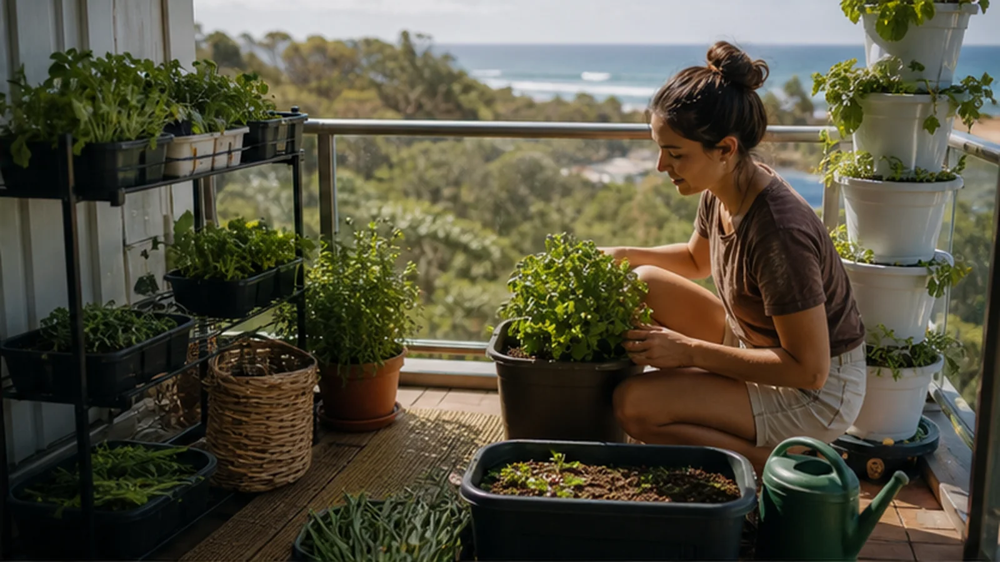
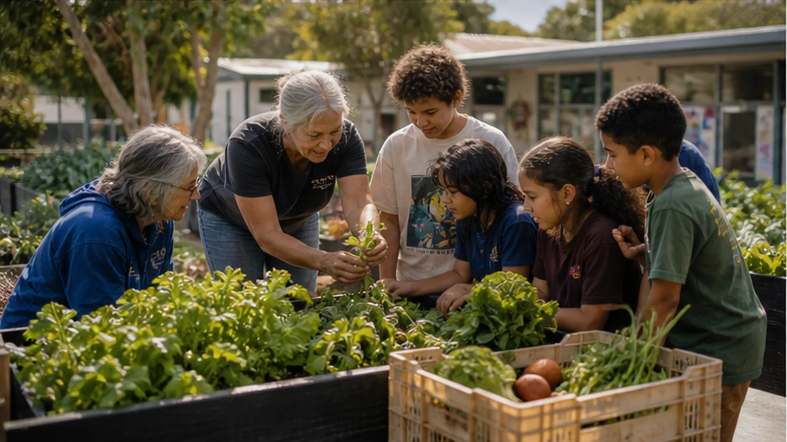
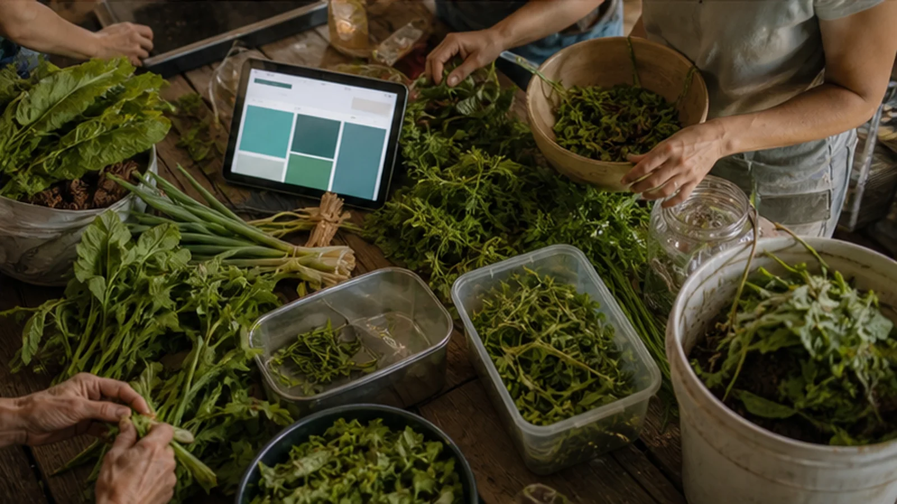

Garden Mate helps households and groups turn available space into practical food production: soil beds, pots, wicking tubs, herbs, greens, microgreens, balcony planters, school gardens and low-footprint indoor systems.
Garden Mate is the growing layer. Kitchen Mate is the cooking and sharing layer.
Grow where people already are.
Food resilience does not need a perfect farm block. It can start with pots, school gardens, club gardens, herbs, greens, harvest crates and a clear plan for what happens when food is ready.

Balconies, rentals and small decks can still grow useful herbs and greens.

School, club and community gardens can teach resilience without becoming too heavy.

Harvest timing connects straight into cooking, preserving, sharing and compost.
Copy a Garden Mate prompt.
Use these in ChatGPT or any AI to design a realistic growing plan. Replace the brackets with your space, budget, time and local conditions.
Backyard food buffer
I have [space size], [sun hours], [water access], [soil/pots/raised beds], and [time per week]. Design a simple food garden for resilient everyday cooking. Prioritise herbs, greens and crops that fit [season/location]. Include setup steps, maintenance, harvest timing and what can feed a Shared Table.
Balcony or rental setup
I rent or have limited space: [balcony/patio/window/garage]. Make a low-cost, removable growing plan using pots, wicking tubs, microgreens or shelves. Include what to grow first, how to avoid mess, watering rhythm and how to share surplus safely.
School or club garden
Design a small school, club or community garden that teaches food resilience without becoming too much work. Include roles for kids, elders and volunteers, weekly jobs, harvest use, safety, compost, signage and a simple Shared Table connection.
Heat and water stress
We are growing food in a coastal place with heat, wind, salt air and water limits. Suggest resilient crops, shade, mulch, watering, wicking beds, containers and failure-safe steps. Keep it practical and avoid over-engineering.
Harvest calendar
Turn this list of crops into a simple harvest calendar: [crop list]. Show what to plant now, what to harvest soon, what to preserve, and when to alert the private Shared Table board about likely surplus.
Garden to kitchen loop
Connect this garden plan to Kitchen Mate: [garden plan]. Suggest meal ideas, preserving options, shopping gaps, compost loops and private noticeboard updates so the harvest does not get wasted.
Build a quick growing prompt.
Pick a space, growing style and maintenance level. The page writes a starter prompt for your AI chat.